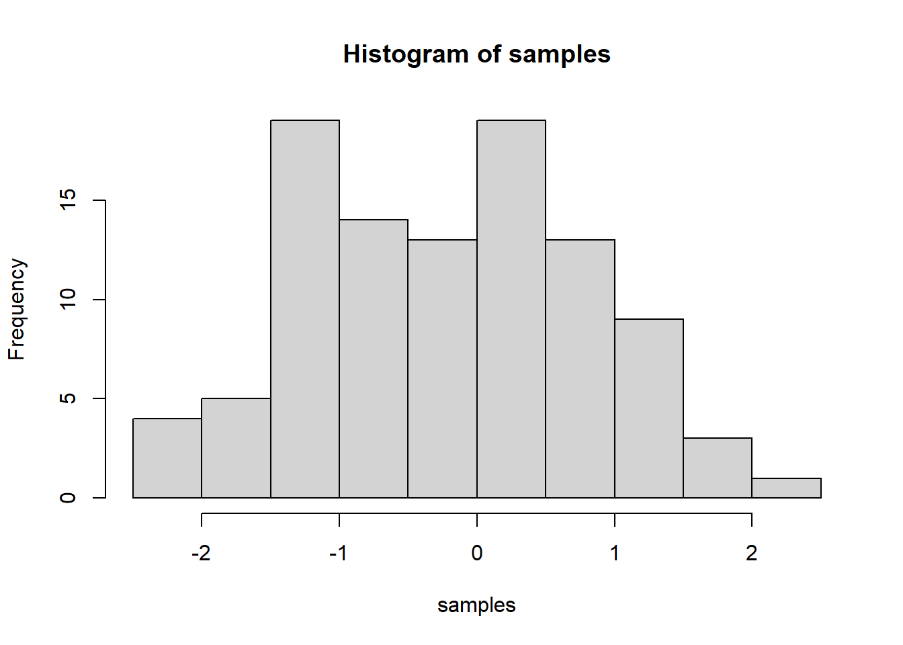

IMPORTANT: You can delete everything in here and start fresh. You might want to start by not deleting anything above this line until you know what that stuff is doing.
This is an .Rmd file. It is plain text with special features. Any time you write just like this, it will be compiled to normal text in the website. If you put a # in front of your text, it will create a top level-header.
Last compiled: 2022-11-12
ช้ตัวอย่างจากบทความวิชาการของDownload
ข้อมูลที่ใช้ในการวิเคราะห์ : correlation matrix จากบทความข้างต้น
library(lavaan)
lower = '
1.000
0.859 1.000
0.873 0.882 1.000
0.816 0.854 0.852 1.000
0.281 0.319 0.297 0.301 1
0.369 0.363 0.343 0.363 0.628 1
'
au.cor = getCov(lower, names = c("sa", "rt", "bp","imp", "ao", "we"))
au.cor## sa rt bp imp ao we
## sa 1.000 0.859 0.873 0.816 0.281 0.369
## rt 0.859 1.000 0.882 0.854 0.319 0.363
## bp 0.873 0.882 1.000 0.852 0.297 0.343
## imp 0.816 0.854 0.852 1.000 0.301 0.363
## ao 0.281 0.319 0.297 0.301 1.000 0.628
## we 0.369 0.363 0.343 0.363 0.628 1.000au.cov = cor2cov(R = au.cor, sds = c(0.629, 0.341, 0.560,
0.318,0.284, 0.291 ))
au.cov## sa rt bp imp ao we
## sa 0.39564100 0.18424605 0.30750552 0.16321795 0.05019672 0.06754139
## rt 0.18424605 0.11628100 0.16842672 0.09260605 0.03089324 0.03602085
## bp 0.30750552 0.16842672 0.31360000 0.15172416 0.04723488 0.05589528
## imp 0.16321795 0.09260605 0.15172416 0.10112400 0.02718391 0.03359129
## ao 0.05019672 0.03089324 0.04723488 0.02718391 0.08065600 0.05190043
## we 0.06754139 0.03602085 0.05589528 0.03359129 0.05190043 0.08468100model = '
auf =~ sa + rt + bp + imp
aof =~ ao
wef =~ we
wef~ aof + auf
aof ~ auf
ao ~~ .01*ao
we ~~ .01*we
sa ~~ bp
'
#summary(onefactor)
results = sem(model, sample.cov=au.cov, sample.nobs=605)
summary(results, standardize=TRUE, fit.measures=TRUE)## lavaan 0.6-12 ended normally after 51 iterations
##
## Estimator ML
## Optimization method NLMINB
## Number of model parameters 14
##
## Number of observations 605
##
## Model Test User Model:
##
## Test statistic 12.320
## Degrees of freedom 7
## P-value (Chi-square) 0.091
##
## Model Test Baseline Model:
##
## Test statistic 3203.520
## Degrees of freedom 15
## P-value 0.000
##
## User Model versus Baseline Model:
##
## Comparative Fit Index (CFI) 0.998
## Tucker-Lewis Index (TLI) 0.996
##
## Loglikelihood and Information Criteria:
##
## Loglikelihood user model (H0) -68.414
## Loglikelihood unrestricted model (H1) -62.254
##
## Akaike (AIC) 164.827
## Bayesian (BIC) 226.501
## Sample-size adjusted Bayesian (BIC) 182.054
##
## Root Mean Square Error of Approximation:
##
## RMSEA 0.035
## 90 Percent confidence interval - lower 0.000
## 90 Percent confidence interval - upper 0.067
## P-value RMSEA <= 0.05 0.739
##
## Standardized Root Mean Square Residual:
##
## SRMR 0.008
##
## Parameter Estimates:
##
## Standard errors Standard
## Information Expected
## Information saturated (h1) model Structured
##
## Latent Variables:
## Estimate Std.Err z-value P(>|z|) Std.lv Std.all
## auf =~
## sa 1.000 0.570 0.907
## rt 0.564 0.014 39.206 0.000 0.322 0.944
## bp 0.919 0.021 43.243 0.000 0.524 0.936
## imp 0.505 0.014 35.483 0.000 0.288 0.906
## aof =~
## ao 1.000 0.266 0.936
## wef =~
## we 1.000 0.273 0.939
##
## Regressions:
## Estimate Std.Err z-value P(>|z|) Std.lv Std.all
## wef ~
## aof 0.668 0.039 17.040 0.000 0.650 0.650
## auf 0.089 0.017 5.069 0.000 0.185 0.185
## aof ~
## auf 0.162 0.020 8.200 0.000 0.349 0.349
##
## Covariances:
## Estimate Std.Err z-value P(>|z|) Std.lv Std.all
## .sa ~~
## .bp 0.008 0.004 2.283 0.022 0.008 0.161
##
## Variances:
## Estimate Std.Err z-value P(>|z|) Std.lv Std.all
## .ao 0.010 0.010 0.124
## .we 0.010 0.010 0.118
## .sa 0.070 0.006 12.233 0.000 0.070 0.177
## .rt 0.013 0.001 10.154 0.000 0.013 0.110
## .bp 0.039 0.004 10.400 0.000 0.039 0.124
## .imp 0.018 0.001 13.648 0.000 0.018 0.179
## auf 0.325 0.023 14.309 0.000 1.000 1.000
## .aof 0.062 0.004 14.897 0.000 0.878 0.878
## .wef 0.034 0.003 12.198 0.000 0.459 0.459modificationIndices(results, minimum.value = 0)## lhs op rhs mi epc sepc.lv sepc.all sepc.nox
## 22 aof =~ sa 0.389 -0.031 -0.008 -0.013 -0.013
## 23 aof =~ rt 0.945 0.024 0.006 0.019 0.019
## 24 aof =~ bp 0.608 -0.031 -0.008 -0.015 -0.015
## 25 aof =~ imp 0.212 0.012 0.003 0.010 0.010
## 27 wef =~ sa 1.621 0.063 0.017 0.027 0.027
## 28 wef =~ rt 0.000 0.000 0.000 0.000 0.000
## 29 wef =~ bp 3.297 -0.072 -0.020 -0.035 -0.035
## 30 wef =~ imp 0.782 0.023 0.006 0.020 0.020
## 32 sa ~~ rt 1.268 0.003 0.003 0.089 0.089
## 33 sa ~~ imp 1.862 -0.003 -0.003 -0.081 -0.081
## 34 sa ~~ ao 4.744 -0.005 -0.005 -0.206 -0.206
## 35 sa ~~ we 6.261 0.006 0.006 0.237 0.237
## 36 rt ~~ bp 0.819 -0.002 -0.002 -0.087 -0.087
## 37 rt ~~ imp 0.832 -0.003 -0.003 -0.222 -0.222
## 38 rt ~~ ao 2.079 0.002 0.002 0.160 0.160
## 39 rt ~~ we 0.956 -0.001 -0.001 -0.109 -0.109
## 40 bp ~~ imp 2.038 0.003 0.003 0.103 0.103
## 41 bp ~~ ao 0.405 0.001 0.001 0.064 0.064
## 42 bp ~~ we 3.650 -0.004 -0.004 -0.194 -0.194
## 43 imp ~~ ao 0.036 0.000 0.000 -0.019 -0.019
## 44 imp ~~ we 0.726 0.001 0.001 0.085 0.085library(semPlot)
semPaths(results,
whatLabels = "std",
layout = "tree")
sessionInfo()## R version 4.2.1 (2022-06-23 ucrt)
## Platform: x86_64-w64-mingw32/x64 (64-bit)
## Running under: Windows 10 x64 (build 22621)
##
## Matrix products: default
##
## locale:
## [1] LC_COLLATE=English_United States.utf8
## [2] LC_CTYPE=English_United States.utf8
## [3] LC_MONETARY=English_United States.utf8
## [4] LC_NUMERIC=C
## [5] LC_TIME=English_United States.utf8
##
## attached base packages:
## [1] stats graphics grDevices utils datasets methods base
##
## other attached packages:
## [1] semPlot_1.1.6 lavaan_0.6-12
##
## loaded via a namespace (and not attached):
## [1] nlme_3.1-157 RColorBrewer_1.1-3 mi_1.1
## [4] tools_4.2.1 backports_1.4.1 bslib_0.4.0
## [7] utf8_1.2.2 R6_2.5.1 rpart_4.1.16
## [10] Hmisc_4.7-1 DBI_1.1.3 colorspace_2.0-3
## [13] nnet_7.3-17 tidyselect_1.2.0 gridExtra_2.3
## [16] mnormt_2.1.1 compiler_4.2.1 fdrtool_1.2.17
## [19] qgraph_1.9.2 cli_3.4.1 htmlTable_2.4.1
## [22] sass_0.4.2 scales_1.2.1 checkmate_2.1.0
## [25] psych_2.2.9 pbapply_1.5-0 sem_3.1-15
## [28] stringr_1.4.1 digest_0.6.29 pbivnorm_0.6.0
## [31] foreign_0.8-83 minqa_1.2.4 rmarkdown_2.17
## [34] base64enc_0.1-3 jpeg_0.1-9 pkgconfig_2.0.3
## [37] htmltools_0.5.3 lme4_1.1-30 lisrelToR_0.1.5
## [40] fastmap_1.1.0 htmlwidgets_1.5.4 rlang_1.0.6
## [43] rstudioapi_0.14 jquerylib_0.1.4 generics_0.1.3
## [46] jsonlite_1.8.2 gtools_3.9.3 dplyr_1.0.10
## [49] zip_2.2.1 magrittr_2.0.3 OpenMx_2.20.6
## [52] Formula_1.2-4 interp_1.1-3 Matrix_1.5-1
## [55] Rcpp_1.0.9 munsell_0.5.0 fansi_1.0.3
## [58] abind_1.4-5 rockchalk_1.8.157 lifecycle_1.0.3
## [61] stringi_1.7.8 yaml_2.3.5 carData_3.0-5
## [64] MASS_7.3-57 plyr_1.8.7 grid_4.2.1
## [67] parallel_4.2.1 deldir_1.0-6 lattice_0.20-45
## [70] kutils_1.70 splines_4.2.1 knitr_1.40
## [73] pillar_1.8.1 igraph_1.3.5 boot_1.3-28
## [76] corpcor_1.6.10 reshape2_1.4.4 stats4_4.2.1
## [79] XML_3.99-0.11 glue_1.6.2 evaluate_0.16
## [82] latticeExtra_0.6-30 RcppParallel_5.1.5 data.table_1.14.2
## [85] png_0.1-7 vctrs_0.4.2 nloptr_2.0.3
## [88] gtable_0.3.1 assertthat_0.2.1 cachem_1.0.6
## [91] ggplot2_3.3.6 xfun_0.33 openxlsx_4.2.5
## [94] xtable_1.8-4 coda_0.19-4 glasso_1.11
## [97] survival_3.3-1 tibble_3.1.8 arm_1.13-1
## [100] cluster_2.1.3